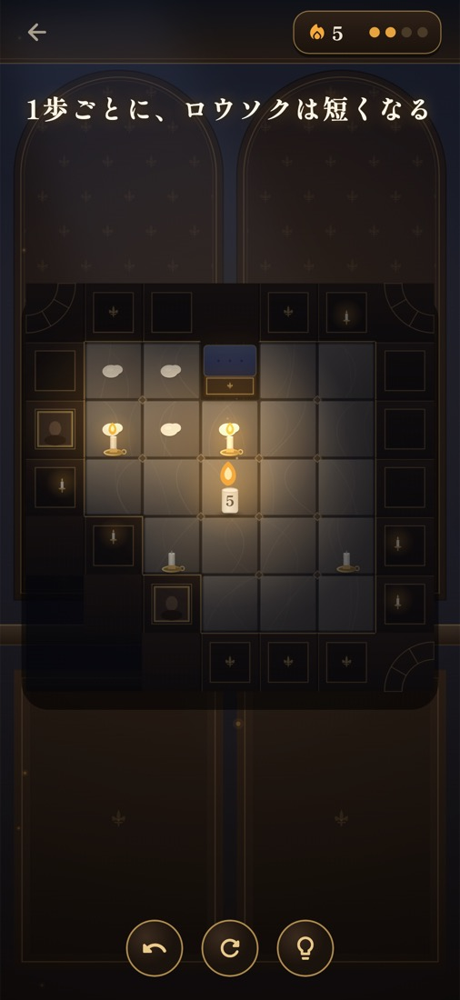

ANDROID CLOSED TEST
Android版の公開前テストに、参加しませんか。
一歩進むたび、短くなるロウソク。夜の洋館にある燭台へ炎を運ぶ、静かな思考パズル「ロウソク行脚」のAndroid版を公開する前に、実際の端末で試してくださる方を募集しています。

ゲームについて
- 全6章・150ステージのパズルゲーム
- ロウソクは一歩進むごとに短くなり、通った道にはロウが残ります
- タップまたはスワイプで操作。ヒントと無制限の一手戻しがあります
- 広告なし。最初の25ステージは無料、その先は一度の購入で解放する予定です
募集内容
- 対象：Google Playを利用できるAndroid端末をお持ちの方
- 人数：まずは12名以上を目標に募集します
- 期間：参加用リンクを受け取ってテストに参加した日から、最低14日間はテスター登録を継続してください
- 費用：テスト参加・ゲームのダウンロードは無料です。テスト中に購入をお願いすることはありません
- お願い：期間中にインストールして遊び、起動や操作の不具合、気づいた点をメールで教えてください。毎日遊ぶ必要はありません
Google Playのクローズドテストでは、参加後にオプトインした状態を14日間続ける必要があります。途中でテスター登録を解除すると、公開に必要なテスト期間を満たせない場合があります。
参加方法
- 下のメールリンクから、件名「ロウソク行脚 Androidテスト参加希望」でご連絡ください。
- 参加方法とGoogle Playのテスト参加リンクを返信します。
- 案内に従ってGoogleアカウントでテストに参加し、Playストアからインストールしてください。
- テスト参加後、最低14日間はオプトインを維持してください。
- 感想や不具合は、端末名・Androidバージョンと一緒に返信でお知らせください。
ご連絡には、テスト参加に使うGoogleアカウントのメールアドレスを本文に記載してください。参加管理とPlayテストへの招待にのみ使用します。テスト用リンクやビルドは準備が整い次第、返信でお送りします。
テストで見たいこと
- お使いのAndroid端末で、インストール・起動・ステージプレイができるか
- 画面表示や操作で困るところがないか
- 音、動き、文字の見やすさに問題がないか
- どの場面が楽しかったか、どこで迷ったか
短い感想だけでも助かります。ゲームの進行状況は端末内に保存され、テスト記録が自動でこちらへ送信されることはありません。
ゲーム紹介動画
YouTube Shortsで、ゲームのプレイ画面や開発の様子をご覧いただけます。
iPhone / iPad版のApp Storeページを見る →
よくある質問
テスト中も14日間ずっと遊ぶ必要がありますか？
毎日遊ぶ必要はありません。Google Play上でテスターとして参加した状態を最低14日間保つことが必要です。
テスト参加に料金はかかりますか？
参加・ダウンロードは無料です。テスト中に購入をお願いすることもありません。
参加したら必ず感想を送る必要がありますか？
短い感想や不具合の報告を歓迎します。長いアンケートへの回答は必要ありません。